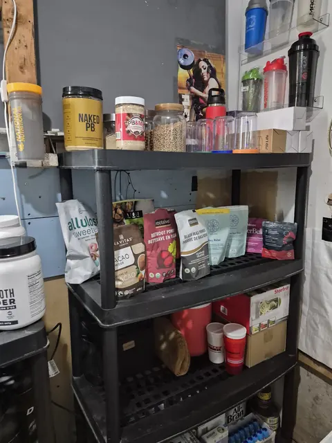

Purpose: A simple carbohydrate-based primer before training.
Usage: Use the recorded kasha and tea quantities at the scheduled morning meal.
Breakfast / primer
80 g dry roasted kasha + Earl Grey tea.

Breakfast / primerBreakfast / primer 80 g dry roasted kasha + Earl Grey tea.Purpose: A simple carbohydrate-based primer before training.
Usage: Use the recorded kasha and tea quantities at the scheduled morning meal.
80 g dry roasted kasha + Earl Grey tea.
Purpose: Varied food formats make the daily meal routine easier to repeat.
Usage: Choose from the logged smoothies, bowls, wraps and solid meals.

Smoothies · bowls · wraps · salads.
*Carbs calculated from remaining calories. Fiber is general target range.
These are the daily nutritional targets from the PROJECT 100 protocol. The 2,780 kcal represents total daily energy intake designed to fuel training while supporting lean muscle maintenance.
The 252g protein (approximately 1g per pound of target body weight) provides the building blocks for muscle protein synthesis and recovery. ~288g carbs fuel training intensity and replenish glycogen stores.
The 69g fat covers essential fatty acid needs and hormone production while keeping the focus on protein-driven nutrition.
Fiber (30-40g): Critical for gut health, especially important post-cholecystectomy (no gallbladder). Supports digestion, feeds beneficial gut bacteria, and helps manage the high-protein intake.
Spread across meals — do not consume as a single bolus.
Water (4L): The hydration reference from the database. Electrolytes accompany training water — not as an afterthought.
Proper hydration supports the high protein intake, kidney function, and training performance. Adjust upward on heavy training days or in heat.
Micronutrients: Vitamins and minerals are the most important yet often overlooked piece. High micronutrient density from whole foods is prioritized.
See the Minerals page for detailed mineral chemistry and the Supplements page for the pill grid covering vitamin/mineral gaps.
Historical plan — whole-day intake is not verified. These figures serve as a reference framework; adjust based on your current training phase, body composition goals, and individual response.
Seven vectors · morning, rest and evening branches.
The database’s 4 L hydration reference is a reported record, not a universal ceiling.
Known totals are partial label calculations, not a measured whole diet.
Whole-day caloric, macro- and micronutrient verification remains deferred in V18700. Historical baselines designating 2,780 kcal, 252 g protein and 69 g fat are preserved as legacy planning figures rather than rigid physiological targets.
| Meal / module | Composition (recorded) | Published historical macros | Clinical relevance |
|---|---|---|---|
| Breakfast / Primer | About 80 g dry roasted kasha, Earl Grey tea | Deferred (not verified) | Carbohydrate baseline; tea timed about 2 hours before V1 to limit tannin and caffeine stacking confusion. |
| Training Lunch | Main meal + Lunch Pill Grid + Digestive Enzymes Ultra | Deferred | Largest solid-fuel window on training days. |
| MS-01 Mega Shake (Preserved Legacy) | 500 mL Protein 3% ultrafiltered milk, 2 scoops Hexapro, 2 scoops PB&Me, hydrated chia, bovine collagen, bone broth protein, cocoa, berries | 1,115 kcal / 129 g P / 73 g C / 36 g F (label check 1,132 kcal) | High-volume meal replacement. Bone-broth protein content remains an unverified label claim. |
| SB-01 Salad Bowl (Preserved Legacy) | Tuna, feta, jumbo beans, avocado oil in 32- | 810 kcal / 50 g P / 55 g C / 36 g F (check 744 kcal) | High micronutrient density; fat moderated to digestive tolerance post- |
| FUSION_2A Dark Matter Casein (Legacy) | 2 scoops Hexapro Chocolate, 175 g Isey 0% Skyr, All-Bran Buds, wild blueberries | 480 kcal / 50 g P / 45 g C / 8 g F (check 452 kcal) | Nighttime slow-digesting blend. No verified mandatory 19:00 curfew. |
Clinical reference: Five interaction cascades · Margins · Laboratory integrity
Your system holds protein constant across training and rest days and moves energy with output — the reverse (cutting protein on rest days) is the most common comeback error, because repair peaks when you are not training.
Hydration: electrolytes accompany training water, not as an afterthought; cramps are logged as data, not endured as noise.
| Rule | Why (analysis) |
|---|---|
| Protein every meal, both day types | Synthesis signal must not blink |
| Fat spread, never bolused | Bile-independent digestion limit |
| Magnesium away from the largest meal | Breaks the osmotic stack |
| Caffeine cut-off respected | Protects the sleep that builds muscle |
Recovery nutrition is a protocol, not a reward.
Source: Open the focused protocol card ↗